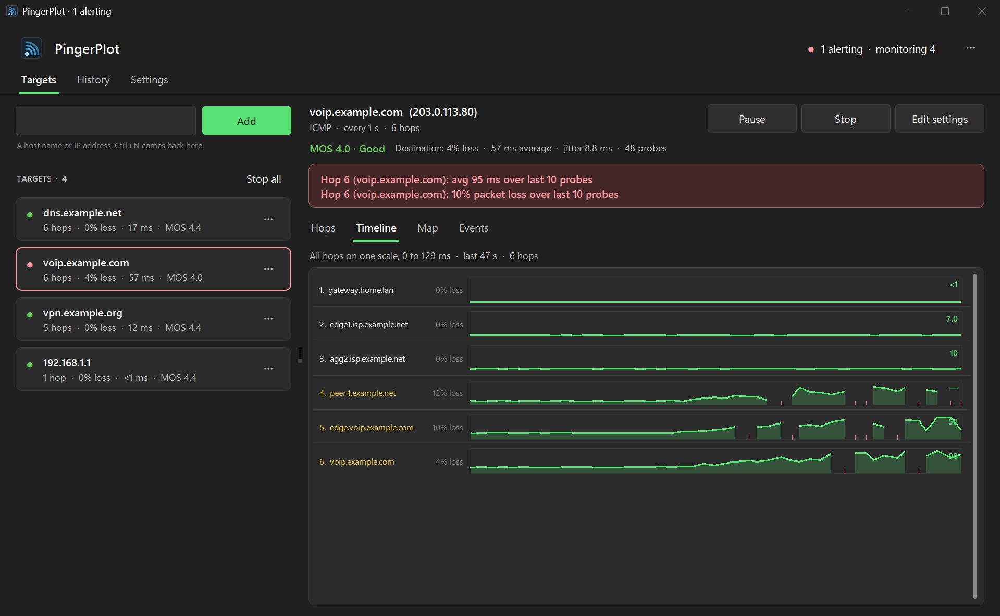
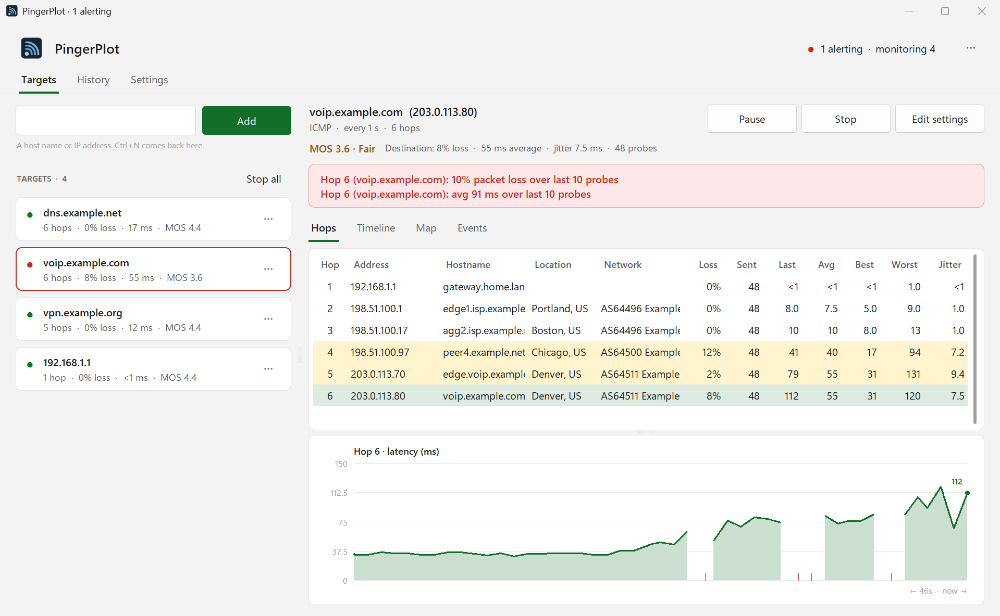
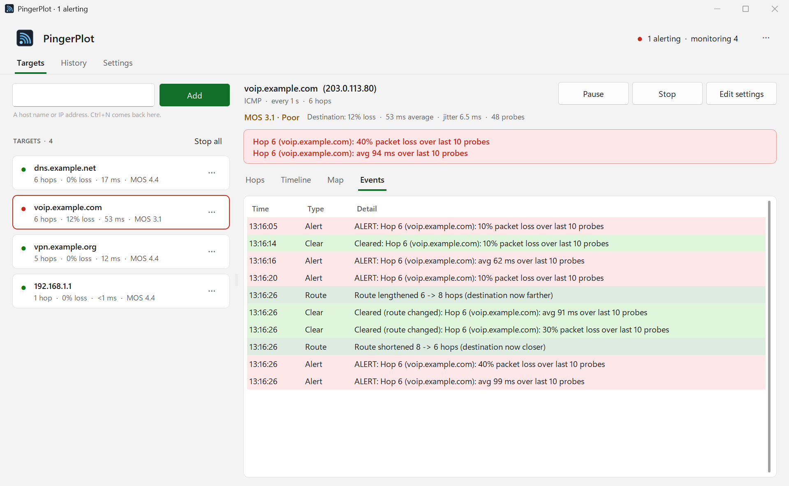
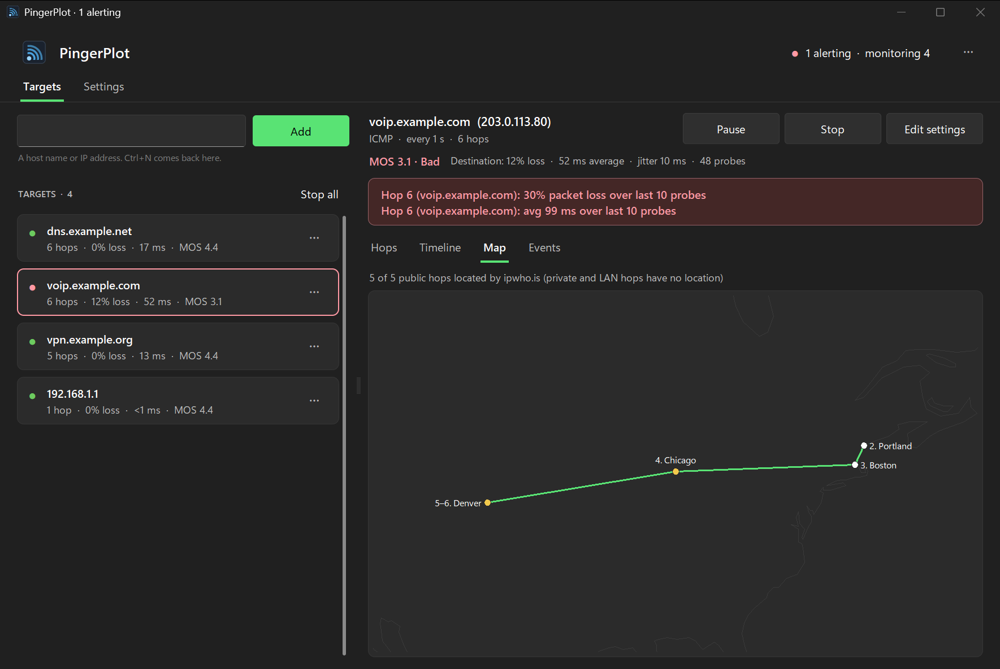
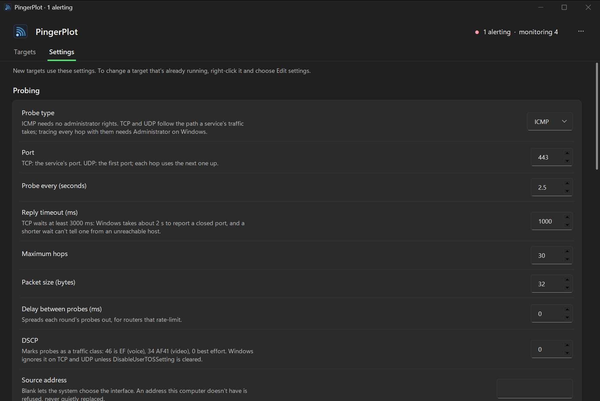

A traceroute that keeps watching
Every hop, all the time
Each round is a full traceroute, so every hop gets current, average, best and worst latency, jitter and loss over minutes or days, not one snapshot.
The path over time
The Timeline draws every hop on one time axis. A latency step shows up as the row where the bars get tall, and stays tall for every hop after it.
Alerts that mean something
Sustained loss, latency or a poor MOS at the destination, over a window you choose, never a router in the middle that just deprioritises ICMP. A banner, a notification, a sound, and a webhook to Slack, Teams, ntfy or Home Assistant.
Route changes, live
A hop whose router changes, or a path that grows or shrinks, is caught within a round and written to the Events list.
ICMP, TCP and UDP
ICMP needs no administrator rights. TCP to a port answers "is this service up, and how fast?". DSCP marking measures the path as voice or video traffic would see it, and a fixed source address picks the interface.
MOS for calls
The ITU-T E-model's 1 to 5 voice-quality score for the destination: one number for whether the path is good enough for a call, and an alert when it isn't.
A record you can compare
Every probe to a size-capped CSV per target, sessions you can save and reopen, and a per-hop comparison with an earlier run that calls a changed router "rerouted" rather than inventing a difference.
In the background, or headless
Closing the window keeps monitoring from the notification area; Start with Windows puts it there when you sign in. A headless runner does the same for a server or Task Scheduler, with one-shot reports for tickets.
Signed updates, nothing else sent
It checks GitHub once a day and installs a new version with one click, only if the download carries the release signature built into the app. Probes go only to your targets; the map's lookups only when you open it.
A closer look





All pictures are from the app's demo mode: simulated paths with documentation addresses.
Install
Installer (recommended)
Download PingerPlot-Setup.exe and run it. It installs for your Windows user only, with no admin prompt, adds a Start menu shortcut, and uninstalls from Settings → Apps.
The app isn't code-signed, so Windows may show Windows protected your PC the first time: click More info, then Run anyway.
Portable
Download the zip, unzip it somewhere of your own (a USB stick works), and run PingerPlot.exe. It keeps its settings in its own folder and updates itself in place.
Avoid C:\Program Files, which updates can't write to.
Then
Type a host name or address, your gateway or a server you care about, and press Add. Click a hop to graph it. Full TCP or UDP traceroute needs Run as administrator; ICMP never does.
Linux or macOS? It runs from source with Python 3.10 or newer: see the README.
Feedback
Found a bug or have an idea? Open an issue on GitHub; in the app, ⋯ → Report a problem… fills in the version. Reports from real Linux and macOS machines are especially welcome.